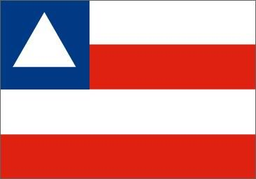

Baiha
A Bahia é um estado brasileiro localizado na Região Nordeste. A população baiana é de 14,9 milhões de habitantes, a quarta maior do Brasil. O município de Salvador é a capital estadual e desempenhou o papel também de primeira capital brasileira entre os anos de 1549 e 1763. A geografia do estado é caracterizada pelas planícies e depressões, bem como por dois tipos climáticos dominantes, o tropical e o semiárido. A economia baiana é a principal do Nordeste e se volta para o setor terciário e para a indústria de transformação.

O atual território baiano foi o primeiro local onde os portugueses se estabeleceram quando chegaram ao Brasil, no ano de 1500. Foi em Porto Seguro, no litoral sul, que a expedição de Pedro Álvares Cabral desembarcou em 22 de abril daquele ano. A nova terra foi batizada de Vera Cruz. Pouco tempo após a descoberta, novas expedições foram realizadas, e o povoamento da região começou a ser realizado a partir de 1534.
A atual capital baiana, Salvador, foi fundada pelo então governador-geral do Brasil, Tomé de Souza, no ano de 1549. A cidade se tornou a primeira capital do Brasil, condição essa que permaneceu até 1753, quando houve a transferência para o Rio de Janeiro. Quando aconteceu a definição da sede do governo, as terras brasileiras já haviam sido divididas em capitanias hereditárias, ficando a Bahia subdividida em outros cinco territórios.
A economia baiana à época era essencialmente voltada para a exploração do pau-brasil e para a produção açucareira, utilizando-se de mão de obra escravizada. Sua decadência se deu com a transferência do centro político da colônia para o Rio, que coincidiu, ainda, com o florescimento da economia aurífera. Esse foi um dos motivos que levaram à Revolta dos Alfaiates ou Conjuração Baiana em 1798, que reuniu as camadas populares e parte da elite.
No século XIX, a Bahia foi palco de outros conflitos políticos e sociais de grande relevância para a sua história. São eles a Revolta dos Malês, de 1834, e a Guerra de Canudos, que aconteceu entre 1896 e 1897.
Região: Nordeste.
Capital: Salvador.
Governo: democracia representativa, com o governador à frente do Poder Executivo estadual.
Área territorial: 564.760,42 km² (IBGE, 2022).
População: 14.141.626 habitantes (IBGE, 2022).
Densidade demográfica: 25,04 hab./km² (IBGE, 2022).
Fuso: Horário Padrão de Brasília (GMT -3 horas).
Clima: tropical e semiárido.
"O estado da Bahia é detentor de uma rica cultura, formada a partir da influência indígena, europeia e, principalmente, africana. Tais aspectos são evidenciados nos costumes do dia a dia, na gastronomia, nas danças e festas populares, na música e até mesmo na religiosidade. Além da fé cristã, notadamente católica, destaca-se a grande presença das religiões de matriz africana no estado, como (mas não somente) o candomblé e a umbanda.
Entre as danças e os ritmos característicos, temos a capoeira e o maculelê. Ainda na música, nomes de projeção nacional e estilos variados têm suas raízes na Bahia, como Gilberto Gil, Caetano Veloso, Raul Seixas, Maria Bethânia, Ivete Sangalo, Gal Costa, Dorival Caymmi e muitos outros. João Gilberto, considerado pai da bossa nova, também nasceu no estado. Na literatura, destacam-se autores como Jorge Amado e João Ubaldo Ribeiro. O geógrafo Milton Santos é de origem baiana.
O Carnaval de Salvador é um grande atrativo turístico e uma das festas mais populares do estado. Algumas celebrações de cunho religioso que reúnem anualmente inúmeros fiéis são a Lavagem da Escadaria de Bonfim, a Festa de Iemanjá e a Festa do Nosso Senhor dos Navegantes.
A típica culinária baiana inclui pratos como o acarajé, o bobó de camarão, o vatapá, a moqueca baiana, o quindim e o mungunzá.